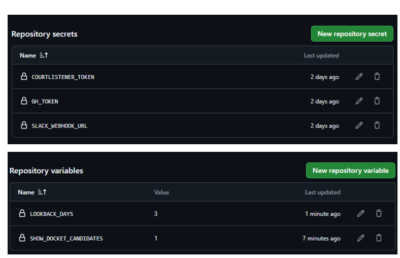

AI Lawsuit Radar
AI 모델 학습을 위한 데이터 무단 사용 및 저작권 소송을 실시간으로 추적하고 분석하는 인텔리전트 자동화 도구입니다.
실시간 모니터링 & 지능형 분석
단순한 수집을 넘어, 법률적 맥락을 파악하고 리스크를 점수화합니다.
CourtListener 연동
미국 연방법원(PACER/RECAP) 데이터를 실시간으로 조회하여 고소장(Complaint) 및 주요 법원 문서를 수집합니다. 매 시간마다 새로운 법적 문서를 탐색하여 즉각적인 리포팅을 지원합니다.
뉴스 기반 보강
RSS 피드를 통해 전 세계 AI 소송 뉴스를 트래킹합니다. 단순 기사 수집뿐만 아니라, 기사 내용에서 관련 사건번호(Docket)를 추출하여 법원 데이터와 크로스 체크를 수행합니다.
Gemini AI 분석
LLM(Gemini 1.5)을 활용하여 복잡한 법률 문서를 요약합니다. 특히 '의미론적 중복 제거' 기술을 통해 제목은 다르지만 내용은 동일한 사건들을 지능적으로 걸러내어 리포트의 피로도를 낮춥니다.
리스크 레벨링
Nature of Suit 820(저작권) 코드와 'train', 'training' 등의 키워드 조합을 기반으로 리스크를 0~100점 사이로 산정합니다. 핵심적인 AI 학습 저작권 소송은 최우선 순위로 리포팅됩니다.
App Preview
GitHub 이슈, Slack 알림, Gemini 분석 리포트의 실제 출력 예시입니다.


비인가 학습 감지 기준 (Scoring Logic)
소장의 내용을 분석하여 저작권 및 학습 관련 쟁점의 강도를 수치화합니다.
무단 수집 + 학습 + 상업적 사용 (820 + Train 가점 포함)
모델 학습 직접 언급 및 관련 쟁점 수반
학습 데이터 관련 법적 쟁점 또는 NOS 820 단독 감지
간접 연관 또는 정식 데이터 계약 사례
시스템 아키텍처 (Architecture)
데이터 수집부터 지능형 필터링, 그리고 리포팅까지의 기술적 흐름입니다.
Data Ingestion & Discovery
CourtListener API와 다수의 RSS Feed를 통해 최신 소송 및 뉴스 정보를 매 시간마다 탐색합니다. 검색 쿼리는 AI 학습 및 저작권 관련 정밀 키워드 조합으로 최적화되어 있습니다.
Intelligent Extraction & Parsing
수집된 PDF/HTML 본문에서 사건번호, 당사자, 소송 이유, AI 학습 관련 핵심 구절(Snippet)을 정밀하게 파싱합니다. Heuristic 알고리즘과 정규표현식을 사용하여 데이터의 정확도를 높입니다.
Gemini-Powered Deduplication
Gemini Embedding 모델(text-embedding-004)을 사용하여 현재 수집된 뉴스와 이전 리포트 간의 코사인 유사도를 계산합니다. 이를 통해 문맥상 동일한 정보는 자동으로 스킵하여 불필요한 알림을 방지합니다.
Aggregated Multi-Channel Reporting
정제된 정보는 GitHub Issues에 계층형 댓글 구조로 발행됩니다. 동시에 Slack Incoming Webhook을 통해 현황 요약 메시지를 발송하여 모바일에서도 즉시 확인이 가능합니다.
Technology Stack
신뢰성 있는 오픈소스와 최신 AI 기술을 결합하여 구축되었습니다.
Getting Started
GitHub Secrets 및 Variables 설정만으로 즉시 운영이 가능합니다.

# 1. 기본 서비스 설정 (Non-LLM)
SLACK_WEBHOOK_URL = "https://hooks.slack.com/services/..."
GITHUB_TOKEN = "ghp_your_token..."
LOOKBACK_DAYS = 3
# 2. AI 지능형 기능 설정 (LLM / Gemini)
GEMINI_API_KEY = "your_gemini_api_key"
GEMINI_SEMANTIC_DEDUP = 1 # 의미론적 중복 제거 활성화 (Embedding API 사용)
GEMINI_AISUIT_TREND_DAYS = 3 # Gemini 동향 분석 리포트 기간
SEMANTIC_DEDUP_THRESHOLD = 0.85 # 중복 판정 임계값